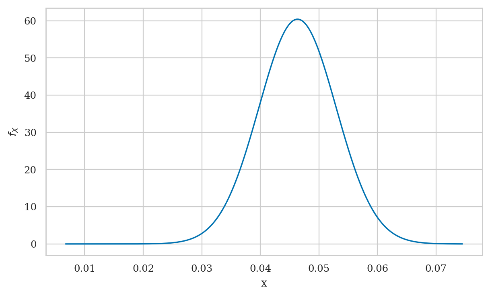
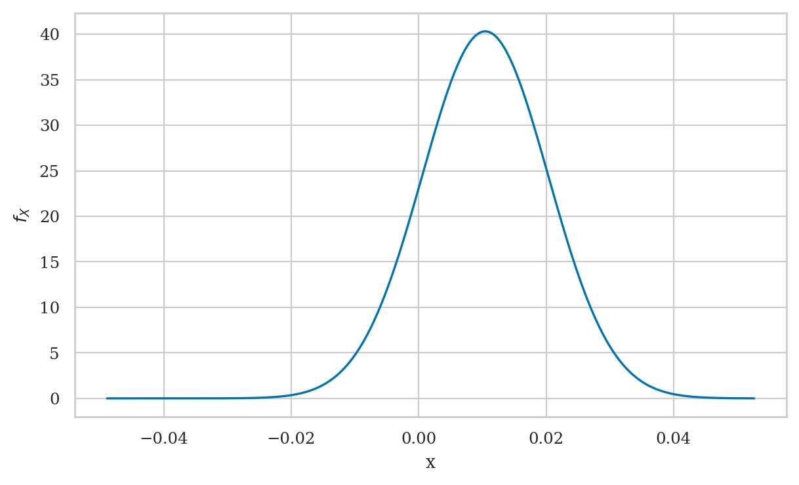
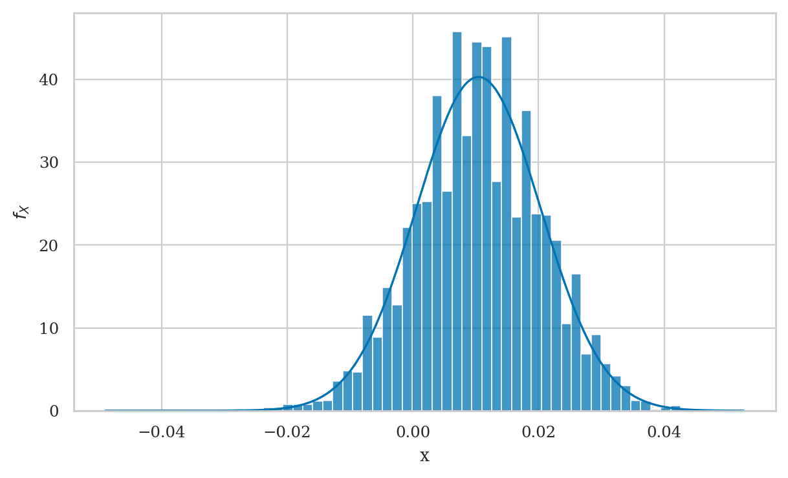
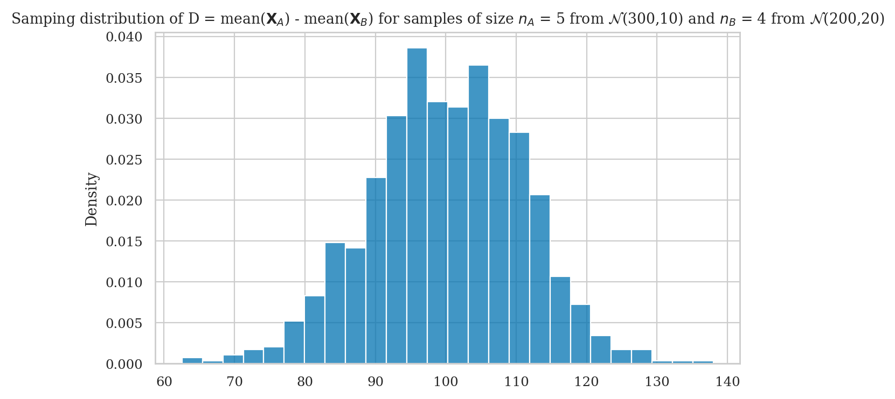

Section 3.2 — Estimators
Contents
Section 3.2 — Estimators#
This notebook contains the code examples from Section 3.1 Estimators of the No Bullshit Guide to Statistics.
We’ll begin our study of inferential statistics by introducing estimators, which are the math tools used for both estimation and hypothesis testing.

Notebook setup#
# load Python modules
import numpy as np
import pandas as pd
import seaborn as sns
import matplotlib.pyplot as plt
# Figures setup
sns.set_theme(
context="paper",
style="whitegrid",
palette="colorblind",
rc={'figure.figsize': (7,4)},
)
%config InlineBackend.figure_format = 'retina'
# set random seed for repeatability
np.random.seed(42)
from plot_helpers import plot_pdf
\(\def\stderr#1{\mathbf{se}_{#1}}\) \(\def\stderrhat#1{\hat{\mathbf{se}}_{#1}}\) \(\newcommand{\Mean}{\textbf{Mean}}\) \(\newcommand{\Var}{\textbf{Var}}\) \(\newcommand{\Std}{\textbf{Std}}\) \(\newcommand{\Freq}{\textbf{Freq}}\) \(\newcommand{\RelFreq}{\textbf{RelFreq}}\)
Statistical inference context#
DATA:
population
sample
statistic
PROB:
probability model
model family
parameters
Statistical inference is the use the values of the statistics obtained from the sample \(\mathbf{x} = (x_1, x_2, \ldots, x_n)\) to estimate the population parameters \(\theta\). For example, the sample mean \(\overline{\mathbf{x}}=\Mean(\mathbf{x})\) is an estimate of the population mean \(\mu\), and the sample variance \(s_{\mathbf{x}}^2=\Var(\mathbf{x})\) is an estimate of the population variance \(\sigma^2\).
Estimator definitions#
We use the term “estimator” to describe a function \(g\) that takes samples as inputs and produces parameter estimates as outputs. Written mathematically, and estimator is a function of the form: $\( g \colon \underbrace{\mathcal{X}\times \mathcal{X}\times \cdots \times \mathcal{X}}_{n \textrm{ copies}} \quad \to \quad \mathbb{R}, \)\( where \)n\( is the samples size and \)\mathcal{X}\( denotes the possible values of the random variable \)X$.
We give different names to estimates, depending on the use case:
statistic = a quantity computed from a sample (e.g. descriptive statistics)
parameter estimates = statistics that estimate population parameters
test statistic = an estimate used as part of hypothesis testing procedure
The value of the estimator \(g(\mathbf{x})\) is computed from a particular sample \(\mathbf{x} = (x_1, x_2, \ldots, x_n)\).
The sampling distribution of the estimator \(g\) is the distribution of \(g(\mathbf{X})\), where \(\mathbf{X} = (X_1, X_2, \ldots, X_n)\) is a random sample.
Example of estimators#
Let’s start with some estimators you’re already familiar with (discussed in descriptive statistics):
Sample mean
estimator: \(\overline{\mathbf{x}} = g(\mathbf{x}) = \frac{1}{n}\sum_{i=1}^n x_i\)
gives an estimate for the population mean \(\mu\)
def mean(sample):
return sum(sample) / len(sample)
# ALT. use np.mean(sample)
# ALT. use .mean() method on a Pandas series
Sample variance
estimator: \(s_{\mathbf{x}}^2 = h(\mathbf{x}) = \frac{1}{n-1}\sum_{i=1}^n (x_i-\overline{\mathbf{x}})^2\)
gives an estimate for the population variance \(\sigma^2\)
note the denominator is \((n-1)\) and not \(n\)
def var(sample):
xbar = mean(sample)
sumdevs = sum( (xi-xbar)**2 for xi in sample )
return sumdevs/(len(sample)-1)
# ALT. use np.var(sample, ddof=1)
# ALT. use .var() method on a Pandas series
In this notebook we’ll develop some new estimators that are specific for the comparison of the two groups.
Difference between sample means
estimator: \(\hat{d} = \Mean(\mathbf{x}_A) - \Mean(\mathbf{x}_B) = \overline{\mathbf{x}}_A - \overline{\mathbf{x}}_B\)
gives an estimate for the difference between population means: \(\Delta = \mu_A - \mu_B\)
def dmeans(xA, xB):
"""
Estimator for the difference between group means.
"""
d = np.mean(xA) - np.mean(xB)
return d
Discrete values#
We’ll also discuss estimators for working with samples of discrete values, based on counting:
Sample proportion
estimator: \(\widehat{p} = \RelFreq_{\mathbf{x}}(1) = \frac{ \textrm{count of } 1\textrm{s in } \mathbf{x} }{n} = g(\mathbf{x})\)
gives an estimate of the parameter \(p\) for a Bernoulli population
Difference between sample proportions
estimator: \(\hat{d} = \widehat{p}_{\mathbf{x}} - \widehat{p}_{\mathbf{y}} = d(\mathbf{x}, \mathbf{y})\)
gives an estimate for the difference between population proportions \(\delta = p_x - p_y\)
Estimator applications#
alksj
Sampling distributions#
Examples of sampling distributions#
Let’s look at the same estimators that we described in the previous section, but this time applied to random samples of size \(n\):
Sample mean: \(\overline{\mathbf{X}} = g(\mathbf{X}) = \tfrac{1}{n}\sum_{i=1}^n X_i\)
Sample variance: \(S_{\mathbf{X}}^2 = h(\mathbf{X}) = \tfrac{1}{n-1}\sum_{i=1}^n \left(X_i - \overline{\mathbf{X}} \right)^2\)
Difference between sample means: \(\hat{D} = d(\mathbf{X}, \mathbf{Y}) = \overline{\mathbf{X}} - \overline{\mathbf{Y}}\)
Sample proportion: \(\widehat{P} = g(\mathbf{X}) = \frac{1}{n}\sum_{i=1}^n X_i\)
Difference between proportions: \(\hat{D} = \widehat{P}_{\mathbf{X}} - \widehat{P}_{\mathbf{Y}} = d(\mathbf{X}, \mathbf{Y})\)
Note these formulas is identical to the formulas we saw earlier. The only difference is that we’re calculating the functions \(g\), \(h\), and \(d\) based on a random sample \(\mathbf{X} = (X_1, X_2, \ldots, X_n)\), instead of particular sample \(\mathbf{x} = (x_1, x_2, \ldots, x_n)\).
Estimator properties#
bias
variance
standard error
Visualizing sampling distributions#
def gen_sampling_dist(rv, statfunc, n, N=1000):
stats = []
for i in range(0, N):
sample = rv.rvs(n)
stat = statfunc(sample)
stats.append(stat)
return stats
Bootstrap estimation#
from statistics import mean
def bootstrap_stat(sample, statfunc=mean, B=5000):
"""
Compute the sampling dist. of the `statfunc` estimator
from `B` bootstrap samples generated from `sample`.
"""
n = len(sample)
bstats = []
for i in range(0, B):
bsample = np.random.choice(sample, n, replace=True)
bstat = statfunc(bsample)
bstats.append(bstat)
return bstats
Analytical derivations#
Sample mean estimator#
Sample variance estimator#
Difference between means estimator#
OLD Difference between group means#
Consider two normally distributed random variables \(X_A\) and \(X_B\): $\( X_A \sim \mathcal{N}\!\left(\mu_A, \sigma_A \right) \qquad \textrm{and} \qquad X_B \sim \mathcal{N}\!\left(\mu_B, \sigma_B \right) \)$ that describe the probability distribution for groups A and B, respectively.
A sample of size \(n_A\) from \(X_A\) is denoted \(\mathbf{x}_A = (x_1, x_2, \ldots, x_{n_A})\)=
xA, and let \(\mathbf{x}_B = (x_1, x_2, \ldots, x_{n_B})\)=xBbe a random sample of size \(n_B\) from \(X_B\).We compute the mean in each group: \(\overline{\mathbf{x}}_{A} = \texttt{mean}(\mathbf{x}_A)\) and \(\overline{\mathbf{x}}_{B} = \texttt{mean}(\mathbf{x}_B)\)
The value of the estimator is \(\hat{d} = \overline{\mathbf{x}}_{A} - \overline{\mathbf{x}}_{B}\)
Note the difference between group means is precisely the estimator Amy need for her analysis (Group S and Group NS). We intentionally use the labels A and B to illustrate the general case.
Sampling distribution of the estimator dmeans#
How well does the estimate \(\hat{d}\) approximate the true value \(\Delta\)? What is the accuracy and variability of the estimates we can expect?
To answer these questions, consider the random samples \(\mathbf{X}_A = (X_1, X_2, \ldots, X_{n_A})\) and \(\mathbf{X}_B = (X_1, X_2, \ldots, X_{n_B})\), then compute the sampling distribution: \(\hat{D} = \overline{\mathbf{X}}_A - \overline{\mathbf{X}}_{B}\).
By definition, the sampling distribution of the estimator is obtained by repeatedly generating samples xA and xB from the two distributions and computing dmeans on the random samples. For example, we can obtain the sampling distribution by generating \(N=1000\) samples.
Theoretical model for the sampling distribution of dmeans#
Let’s now use probability theory to build a theoretical model for the sampling distribution of the difference-between-means estimator dmeans.
The central limit theorem tells us the sample mean within the two group are $\( \overline{\mathbf{X}}_A \sim \mathcal{N}\!\left(\mu_A, \tfrac{\sigma_A}{\sqrt{n_A}} \right) \qquad \textrm{and} \qquad \overline{\mathbf{X}}_B \sim \mathcal{N}\!\left(\mu_B, \tfrac{\sigma_B}{\sqrt{n_B}} \right). \)$
The rules of probability theory tells us that the difference of two normal random variables requires subtracting their means and adding their variance, so we get: $\( D \sim \mathcal{N}\!\left(\mu_A - \mu_B, \ \sqrt{\tfrac{\sigma^2_A}{n_A} + \tfrac{\sigma^2_B}{n_B}} \right). \)$
In other words, the sampling distribution for the difference between means estimator \(\hat{D}\) has mean and standard deviation given by: $\( \mu_D = \mu_A - \mu_B \qquad \textrm{and} \qquad \sigma_D = \sqrt{ \tfrac{\sigma^2_A}{n_A} + \tfrac{\sigma^2_B}{n_B} }. \)$
Probability theory predicts the sampling distribution had mean …
# Dmean = muA - muB
# Dmean
… and standard deviation:
# Dstd = np.sqrt(sigmaA**2/nA + sigmaB**2/nB)
# Dstd
Let’s plot the theoretical sampling distribution on top of the simulated data to see if they are a good fit.
# x = np.linspace(min(dmeans_sdist), max(dmeans_sdist), 10000)
# D = norm(Dmean, Dstd).pdf(x)
# label = 'Theoretical sampling distribuition'
# sns.lineplot(x=x, y=D, ax=ax3, label=label, color=blue)
# ax3.figure
Proportion estimator#
visitors = pd.read_csv("../datasets/visitors.csv")
xA = visitors[visitors["version"]=="A"]["bought"].values
phat = xA.mean()
phat
0.046351084812623275
var = phat*(1-phat)
var
0.04420266174931628
n = len(xA)
se_Phat = np.sqrt(var/n)
se_Phat
0.006602451710468567
from scipy.stats import norm
Phat = norm(phat, se_Phat)
plot_pdf(Phat)
<AxesSubplot: xlabel='x', ylabel='$f_{X}$'>

Difference between proportion estimator#
visitors = pd.read_csv("../datasets/visitors.csv")
xA = visitors[visitors["version"]=="A"]["bought"].values
xB = visitors[visitors["version"]=="B"]["bought"].values
pAhat = xA.mean()
pBhat = xB.mean()
pAhat, pBhat
(0.046351084812623275, 0.056795131845841784)
nA, nB = len(xA), len(xB)
nA, nB
(1014, 986)
d = pBhat - pAhat
d
0.01044404703321851
varA = pAhat*(1-pAhat)
varB = pBhat*(1-pBhat)
seD = np.sqrt(varA/nA + varB/nB)
from scipy.stats import norm
Dhat = norm(d, seD)
ax = plot_pdf(Dhat)

# compute bootstrap estimates for mean in each group
meanA_bstats = bootstrap_stat(xA, statfunc=np.mean)
meanB_bstats = bootstrap_stat(xB, statfunc=np.mean)
# compute the difference between means from bootstrap samples
dprops_bstats = []
for bmeanA, bmeanB in zip(meanA_bstats, meanB_bstats):
d_boot = bmeanB - bmeanA
dprops_bstats.append(d_boot)
sns.histplot(dprops_bstats, stat="density", ax=ax)
ax.figure

Confidence intervals#
Bootstrap confidence intervals#
Analytical approximations#
Explanations#
Discussion#
CUT MATERIAL#
Example diff betweeen known Normals#
# example parameters for each group
muA, sigmaA = 300, 10
muB, sigmaB = 200, 20
# size of samples for each group
nA = 5
nB = 4
Particular value of the estimator dmeans#
xA = norm(muA, sigmaA).rvs(nA) # random sample from Group A
xB = norm(muB, sigmaB).rvs(nB) # random sample from Group B
d = dmeans(xA, xB)
d
117.48970206593862
The value of \(\hat{d}\) computed from the samples is an estimate for the difference between means of two groups: \(\Delta = \mu_A - \mu_{B}\) (which we know is \(100\) in this example).
# MAYBE USE IN EXERCISE
def gen_sampling_dist2(rvA, rvB, statfunc, nA, nB, N=1000):
stats = []
for i in range(0, N):
xA = rvA.rvs(nA)
xB = rvB.rvs(nB)
stat = statfunc(xA, xB)
stats.append(stat)
return stats
def get_sampling_dist(statfunc, meanA, stdA, nA, meanB, stdB, nB, N=1000):
"""
Obtain the sampling distribution of the statistic `statfunc`
from `N` random samples drawn from groups A and B with parmeters:
- Group A: `nA` values taken from `norm(meanA, stdA)`
- Group B: `nB` values taken from `norm(meanB, stdB)`
"""
stats = []
for i in range(0, N):
xA = norm(meanA, stdA).rvs(nA) # random sample from Group A
xB = norm(meanB, stdB).rvs(nB) # random sample from Group B
stat = statfunc(xA, xB) # evaluate `statfunc`
stats.append(stat) # record the value of statfunc
return stats
# Generate the sampling distirbution for dmeans
dmeans_sdist = get_sampling_dist(statfunc=dmeans,
meanA=muA, stdA=sigmaA, nA=nA,
meanB=muB, stdB=sigmaB, nB=nB)
print("Generated", len(dmeans_sdist), "values from `dmeans(XA, XB)`")
Generated 1000 values from `dmeans(XA, XB)`
# first 3 values
dmeans_sdist[0:3]
[87.8983846620313, 93.35915073139284, 104.48123797609409]
Plot the sampling distribution of dmeans#
ax3 = sns.histplot(dmeans_sdist, stat="density")
title3 = "Samping distribution of D = mean($\mathbf{X}_A$) - mean($\mathbf{X}_B$) " + \
"for samples of size $n_A$ = " + str(nA) + \
" from $\mathcal{N}$(" + str(muA) + "," + str(sigmaA) + ")" + \
" and $n_B$ = " + str(nB) + \
" from $\mathcal{N}$(" + str(muB) + "," + str(sigmaB) + ")"
_ = ax3.set_title(title3)
